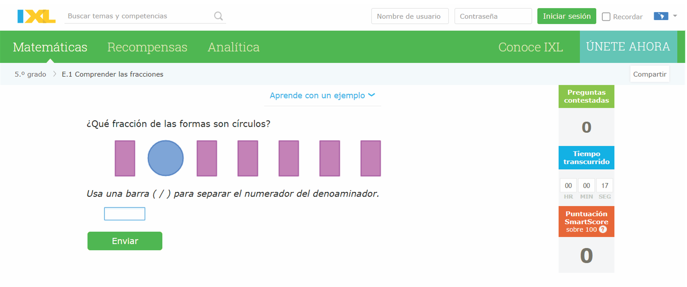

ACTIVIDAD DE CONOCIMENTOS PREVIOS
Objetivo: Conocer las fracciones como parte de un todo, tanto su representación como su lectura.
A continuación encontrará unos videos acerca del tema de las fracciones, los cuales le permitirán adentrarse de una forma recreativa en este mundo maravilloso de las matemáticas.
FUNDAMENTOS DEL SABER
Una vez vistos los videos se realiza retroalimentación de los mismos por parte del docente, aclarando dudas y afianzando los conceptos a través de ejemplos de la vida cotidiana, como por ejemplo narrar la historia de un cumpleaños y como se necesita dividir la torta o cualquier otro suceso de la vida diaria que aplique.
Finalmente observaremos otros videos con ejemplos interactivos acerca del tema planteado, con el fin de indagar si las dudas que se pudieren presentar sobre el tema ya fueron resueltas.
ACTIVIDAD DE CIERRE
Para poner en practica lo aprendido, a continuación encontraremos un entorno virtual de aprendizaje llamado IXL en la actividad E1 "Comprender las fracciones". en donde los estudiantes pondrán a prueba lo aprendido en el módulo 1. Actividad exploratoria.
Enlace de la actividad. https://la.ixl.com/matematicas/5-grado/comprender-las-fracciones

Posteriormente realice la prueba sobre preguntas de elección múltiple para medir sus conocimientos adquiridos en este módulo